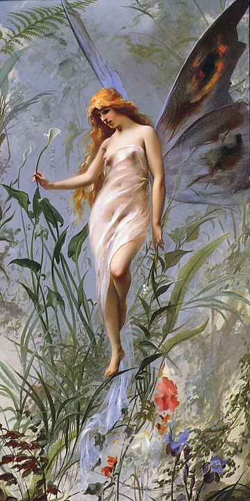
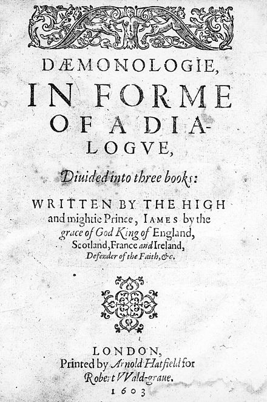
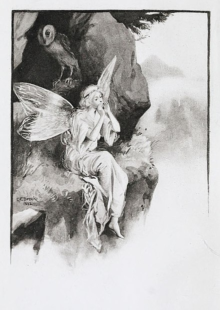
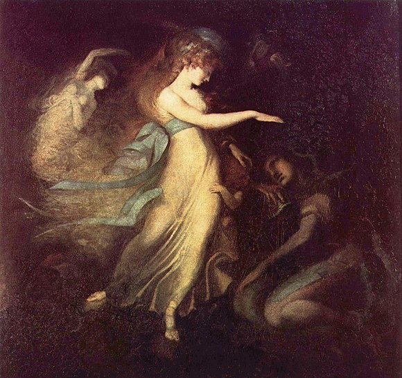
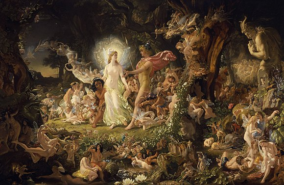

For other uses, see Fairy (disambiguation). "Fay" redirects here. For other uses, see Fay (disambiguation). A fairy (also fay, fae, fey, fair folk, or faerie) is a type of mythical being or legendary creature found in the folklore of multiple European cultures (including Celtic, Slavic, Germanic, English, and French folklore), a form of spirit, often described as metaphysical, supernatural, or preternatural.
Myths and stories about fairies do not have a single origin, but are rather a collection of folk beliefs from disparate sources. Various folk theories about the origins of fairies include casting them as either demoted angels or demons in a Christian tradition, as deities in Pagan belief systems, as spirits of the dead, as prehistoric precursors to humans, or as spirits of nature.
The label of fairy has at times applied only to specific magical creatures with human appearance, magical powers, and a penchant for trickery. At other times it has been used to describe any magical creature, such as goblins and gnomes. Fairy has at times been used as an adjective, with a meaning equivalent to "enchanted" or "magical". It is also used as a name for the place these beings come from, the land of Fairy.
A recurring motif of legends about fairies is the need to ward off fairies using protective charms. Common examples of such charms include church bells, wearing clothing inside out, four-leaf clover, and food. Fairies were also sometimes thought to haunt specific locations, and to lead travelers astray using will-o'-the-wisps. Before the advent of modern medicine, fairies were often blamed for sickness, particularly tuberculosis and birth deformities.
In addition to their folkloric origins, fairies were a common feature of Renaissance literature and Romantic art, and were especially popular in the United Kingdom during the Victorian and Edwardian eras. The Celtic Revival also saw fairies established as a canonical part of Celtic cultural heritage.
Etymology
The English fairy derives from the Early Modern English faerie, meaning 'realm of the fays'. Faerie, in turn, derives from the Old French form faierie, a derivation from faie (from Vulgar Latin fata, 'the fates'), with the abstract noun suffix -erie.
In Old French romance, a faie or fee was a woman skilled in magic, and who knew the power and virtue of words, of stones, and of herbs.[3] Fairy was used to represent: an illusion or enchantment; the land of the Faes; collectively the inhabitants thereof; an individual such as a fairy knight.[3] Faie became Modern English fay, while faierie became fairy, but this spelling almost exclusively refers to one individual (the same meaning as fay). In the sense of 'land where fairies dwell', archaic spellings faery and faerie are still in use. Latinate fay is not related the Germanic fey (from Old English fǣġe), meaning 'fated to die'.[4] Yet, this unrelated Germanic word fey may have been influenced by Old French fae (fay or fairy) as the meaning had shifted slightly to 'fated' from the earlier 'doomed' or 'accursed'.[5] Various folklore traditions refer to fairies euphemistically as wee folk, good folk, people of peace, fair folk (Welsh: Tylwyth Teg), etc.[6]
Historical development
The term fairy is sometimes used to describe any magical creature, including goblins and gnomes, while at other times, the term describes only a specific type of ethereal creature or sprite.[7] Historical origins of fairies range from various traditions from Persian mythology[8] to European folklore such as of Brythonic (Bretons, Welsh, Cornish), Gaelic (Irish, Scots, Manx), and Germanic peoples, and of Middle French medieval romances.
According to some historians, such as Barthélemy d'Herbelot, fairies were adopted from and influenced by the peris of Persian mythology.[9] Peris were angelic beings that were mentioned in antiquity in pre-Islamic Persia as early as the Achaemenid Empire. Peris were later described in various Persian works in great detail such as the Shahnameh by Ferdowsi. A peri was illustrated to be fair, beautiful, and extravagant nature spirits that were supported by wings. This may have influenced migratory Germanic and Eurasian settlers into Europe, or been transmitted during early exchanges.[10] The similarities could also be attributed to a shared Proto-Indo-European mythology.[11]
In the Middle Ages, fairie was used adjectivally, meaning "enchanted" (as in fairie knight, fairie queene), but also became a generic term for various "enchanted" creatures during the Late Middle English period. Literature of the Elizabethan era conflated elves with the fairies of Romance culture, rendering these terms somewhat interchangeable. The modern concept of "fairy" in the narrower sense is unique to English folklore, later made diminutive in accordance with prevailing tastes of the Victorian era, as in "fairy tales" for children. The Victorian era and Edwardian era saw a heightened increase of interest in fairies. The Celtic Revival cast fairies as part of Ireland's cultural heritage. Carole Silvers and others suggested this fascination of English antiquarians arose from a reaction to greater industrialization and loss of older folk ways.[12]
Descriptions
Fairies are generally described as human in appearance and having magical powers. Diminutive fairies of various kinds have been reported through centuries, ranging from quite tiny to the size of a human.[13] These small sizes could be magically assumed, rather than constant.[14] Some smaller fairies could expand their figures to imitate humans.[15] On Orkney, fairies were described as short in stature, dressed in dark grey, and sometimes seen in armour.[16] In some folklore, fairies have green eyes. Some depictions of fairies show them with footwear, others as barefoot. Wings, while common in Victorian and later artworks, are rare in folklore; fairies flew by means of magic, sometimes perched on ragwort stems or the backs of birds.[17] Modern illustrations often include dragonfly or butterfly wings.[18]
Origins
Early modern fairies does not derive from a single origin; the term is a conflation of disparate elements from folk belief sources, influenced by literature and speculation. In folklore of Ireland, the mythic aes sídhe, or 'people of the fairy hills', have come to a modern meaning somewhat inclusive of fairies. The Scandinavian elves also served as an influence. Folklorists and mythologists have variously depicted fairies as: the unworthy dead, the children of Eve, a kind of demon, a species independent of humans, an older race of humans, and fallen angels.[19] The folkloristic or mythological elements combine Celtic, Germanic and Greco-Roman elements. Folklorists have suggested that 'fairies' arose from various earlier beliefs, which lost currency with the advent of Christianity.[20] These disparate explanations are not necessarily incompatible, as 'fairies' may be traced to multiple sources.
Demoted angels
A Christian tenet held that fairies were a class of "demoted" angels.[21] One story described a group of angels revolting, and God ordering the gates of heaven shut; those still in heaven remained angels, those in hell became demons, and those caught in between became fairies.[22] Others wrote that some angels, not being godly enough, yet not evil enough for hell, were thrown out of heaven.[23] This concept may explain the tradition of paying a "teind" or tithe to hell; as fallen angels, although not quite devils, they could be viewed as subjects of Satan.[24]
King James I, in his dissertation Daemonologie, stated the term "faries" referred to illusory spirits (demonic entities) that prophesied to, consorted with, and transported the individuals they served; in medieval times, a witch or sorcerer who had a pact with a familiar spirit might receive these services.[25] In England's Theosophist circles of the 19th century, a belief in the "angelic" nature of fairies was reported.[26] Entities referred to as Devas were said to guide many processes of nature, such as evolution of organisms, growth of plants, etc., many of which resided inside the Sun (Solar Angels). The more Earthbound Devas included nature spirits, elementals, and fairies,[27] which were described as appearing in the form of colored flames, roughly the size of a human.[28]
Arthur Conan Doyle, in his 1922 book The Coming of the Fairies; The Theosophic View of Fairies, reported that eminent theosophist E. L. Gardner had likened fairies to butterflies, whose function was to provide an essential link between the energy of the sun and the plants of Earth, describing them as having no clean-cut shape ... small, hazy, and somewhat luminous clouds of colour with a brighter sparkish nucleus. "That growth of a plant which we regard as the customary and inevitable result of associating the three factors of sun, seed, and soil would never take place if the fairy builders were absent."[29] For a similar concept in Persian mythology, see Peri.
Demoted pagan deities
At one time it was thought that fairies were originally worshiped as deities, such as nymphs and tree spirits,[30] and with the burgeoning predominance of the Christian Church, reverence for these deities carried on, but in a dwindling state of perceived power. Many deprecated deities of older folklore and myth were repurposed as fairies in Victorian fiction (See the works of W. B. Yeats for examples).
Spirits of the dead
One belief held that fairies were spirits of the dead.[37] This derived from many factors common in various folklore and myths: same or similar tales of both ghosts and fairies; the Irish sídhe, origin of their term for fairies, were ancient burial mounds; deemed dangerous to eat food in Fairyland and Hades; the dead and fairies depicted as living underground.[38] Diane Purkiss observed an equating of fairies with the untimely dead who left "unfinished lives".[39] One tale recounted a man caught by the fairies, who found that whenever he looked steadily at a fairy, it appeared as a dead neighbor of his.[40] This theory was among the more common traditions related, although many informants also expressed doubts.[41]
Hidden people
There is an outdated theory that fairy folklore evolved from folk memories of a prehistoric race: newcomers superseded a body of earlier human or humanoid peoples, and the memories of this defeated race developed into modern conceptions of fairies. Proponents find support in the tradition of cold iron as a charm against fairies, viewed as a cultural memory of invaders with iron weapons displacing peoples who had just stone, bone, wood, etc., at their disposal, and were easily defeated. 19th-century archaeologists uncovered underground rooms in the Orkney islands that resembled the Elfland described in Childe Rowland,[42] which lent additional support. In folklore, flint arrowheads from the Stone Age were attributed to the fairies as "elfshot",[43] while their green clothing and underground homes spoke to a need for camouflage and covert shelter from hostile humans, their magic a necessary skill for combating those with superior weaponry. In a Victorian tenet of evolution, mythic cannibalism among ogres was attributed to memories of more savage races, practising alongside "superior" races of more refined sensibilities.[44]
Elementals
A theory that fairies, et al., were intelligent species, distinct from humans and angels.[45] An alchemist, Paracelsus, classed gnomes and sylphs as elementals, meaning magical entities who personify a particular force of nature, and exert powers over these forces.[46] Folklore accounts have described fairies as "spirits of the air".[47]
Characteristics
Much folklore of fairies involves methods of protecting oneself from their malice, by means such as cold iron, charms (see amulet, talisman) of rowan trees or various herbs, or simply shunning locations "known" to be theirs, ergo avoiding offending any fairies.[48] Less harmful pranks ascribed to fairies include: tangling the hair of sleepers into fairy-locks (aka elf-locks), stealing small items, and leading a traveler astray. More dangerous behaviors were also attributed to fairies; any form of sudden death might have stemmed from a fairy kidnapping, the evident corpse a magical replica of wood.[49] Consumption (tuberculosis) was sometimes blamed on fairies who forced young men and women to dance at revels every night, causing them to waste away from lack of rest.[50] Rowan trees were considered sacred to fairies,[51] and a charm tree to protect one's home.[52]
Classifications
Main article: Classifications of fairies Various folklorists have proposed classification systems for fairies. Using terms popularized by W. B. Yeats, trooping fairies are those who appear in groups and might form settlements, as opposed to solitary fairies, who do not live or associate with others of their kind. In this context, the term fairy is usually held in a wider sense, including various similar beings, such as dwarves and elves of Germanic folklore.[53] In Scottish folklore, fairies are divided into the Seelie Court (more beneficently inclined, but still dangerous), and the Unseelie Court (more malicious). While fairies of the Seelie Court enjoyed playing generally harmless pranks on humans, those of the Unseelie Court often brought harm to humans for entertainment.[43] Both could be dangerous to humans if offended. Some scholars have cautioned against the overuse of dividing fairies into types.[54] British folklore historian Dr. Simon Young noted that classification varies widely from researcher to researcher, and pointed out that it does not necessarily reflect old beliefs, since “those people living hundreds of years ago did not structure their experience as we do.”[55]
Changelings
Main article: Changeling A considerable amount of lore about fairies revolves around changelings, fairies left in the place of stolen humans.[12] In particular, folklore describes how to prevent the fairies from stealing babies and substituting changelings, and abducting older people as well.[56] The theme of the swapped child is common in medieval literature and reflects concern over infants thought to be afflicted with unexplained diseases, disorders, or developmental disabilities. In pre-industrial Europe, a peasant family's subsistence frequently depended upon the productive labor of each member, and a person who was a permanent drain on the family's scarce resources could pose a threat to the survival of the entire family.[57]
Protective charms
In terms of protective charms, wearing clothing inside out,[58] church bells, St. John's wort, and four-leaf clovers are regarded as effective. In Newfoundland folklore, the most popular type of fairy protection is bread, varying from stale bread to hard tack or a slice of fresh homemade bread. Bread is associated with the home and the hearth, as well as with industry and the taming of nature, and as such, seems to be disliked by some types of fairies. On the other hand, in much of the Celtic folklore, baked goods are a traditional offering to the folk, as are cream and butter.[26] "The prototype of food, and therefore a symbol of life, bread was one of the commonest protections against fairies. Before going out into a fairy-haunted place, it was customary to put a piece of dry bread in one's pocket."[59] In County Wexford, Ireland, in 1882, it was reported that: "if an infant is carried out after dark a piece of bread is wrapped in its bib or dress, and this protects it from any witchcraft or evil."[60]
Bells also have an ambiguous role; while they protect against fairies, the fairies riding on horseback — such as the fairy queen — often have bells on their harness. This may be a distinguishing trait between the Seelie Court from the Unseelie Court, such that fairies use them to protect themselves from more wicked members of their race.[61] Another ambiguous piece of folklore revolves about poultry: a cock's crow drove away fairies, but other tales recount fairies keeping poultry.[62]
While many fairies will confuse travelers on the path, the will-o'-the-wisp can be avoided by not following it. Certain locations, known to be haunts of fairies, are to be avoided; C. S. Lewis reported hearing of a cottage more feared for its reported fairies than its reported ghost.[63] In particular, digging in fairy hills was unwise. Paths that the fairies travel are also wise to avoid. Home-owners have knocked corners from houses because the corner blocked the fairy path,[64] and cottages have been built with the front and back doors in line, so that the owners could, in need, leave them both open and let the fairies troop through all night.[65] Locations such as fairy forts were left undisturbed; even cutting brush on fairy forts was reputed to be the death of those who performed the act.[66] Fairy trees, such as thorn trees, were dangerous to chop down; one such tree was left alone in Scotland, though it prevented a road from being widened for seventy years.[67]
Other actions were believed to offend fairies. Brownies were known to be driven off by being given clothing, though some folktales recounted that they were offended by the inferior quality of the garments given, and others merely stated it, some even recounting that the brownie was delighted with the gift and left with it.[68] Other brownies left households or farms because they heard a complaint, or a compliment.[69] People who saw the fairies were advised not to look closely, because they resented infringements on their privacy.[70] The need to not offend them could lead to problems: one farmer found that fairies threshed his corn, but the threshing continued after all his corn was gone, and he concluded that they were stealing from his neighbors, leaving him the choice between offending them, dangerous in itself, and profiting by the theft.[71]
Millers were thought by the Scots to be "no canny", owing to their ability to control the forces of nature, such as fire in the kiln, water in the burn, and for being able to set machinery a-whirring. Superstitious communities sometimes believed that the miller must be in league with the fairies. In Scotland, fairies were often mischievous and to be feared. No one dared to set foot in the mill or kiln at night, as it was known that the fairies brought their corn to be milled after dark. So long as the locals believed this, the miller could sleep secure in the knowledge that his stores were not being robbed. John Fraser, the miller of Whitehill, claimed to have hidden and watched the fairies trying unsuccessfully to work the mill. He said he decided to come out of hiding and help them, upon which one of the fairy women gave him a gowpen (double handful of meal) and told him to put it in his empty girnal (store), saying that the store would remain full for a long time, no matter how much he took out.[72]
It is also believed that to know the name of a particular fairy, a person could summon it and force it to do their bidding. The name could be used as an insult towards the fairy in question, but it could also rather contradictorily be used to grant powers and gifts to the user.[citation needed] Before the advent of modern medicine, many physiological conditions were untreatable and when children were born with abnormalities, it was common to blame the fairies.[73]
Legends
Sometimes fairies are described as assuming the guise of an animal.[74] In Scotland, it was peculiar to the fairy women to assume the shape of deer; while witches became mice, hares, cats, gulls, or black sheep. In "The Legend of Knockshigowna", in order to frighten a farmer who pastured his herd on fairy ground, a fairy queen took on the appearance of a great horse, with the wings of an eagle, and a tail like a dragon, hissing loud and spitting fire. Then she would change into a little man lame of a leg, with a bull's head, and a lambent flame playing round it.[75] In the 19th-century child ballad "Lady Isabel and the Elf-Knight", the elf-knight is a Bluebeard figure, and Isabel must trick and kill him to preserve her life.[76] The child ballad "Tam Lin" reveals that the title character, though living among the fairies and having fairy powers, was, in fact, an "earthly knight" and though his life was pleasant now, he feared that the fairies would pay him as their teind (tithe) to hell.[76]
"Sir Orfeo" tells how Sir Orfeo's wife was kidnapped by the King of Faerie and only by trickery and an excellent harping ability was he able to win her back. "Sir Degare" narrates the tale of a woman overcome by her fairy lover, who in later versions of the story is unmasked as a mortal. "Thomas the Rhymer" shows Thomas escaping with less difficulty, but he spends seven years in Elfland.[77] Oisín is harmed not by his stay in Faerie but by his return; when he dismounts, the three centuries that have passed catch up with him, reducing him to an aged man.[78] King Herla (O.E. "Herla cyning"), originally a guise of Woden but later Christianised as a king in a tale by Walter Map, was said, by Map, to have visited a dwarf's underground mansion and returned three centuries later; although only some of his men crumbled to dust on dismounting, Herla and his men who did not dismount were trapped on horseback, this being one account of the origin of the Wild Hunt of European folklore.[79][80] A common feature of the fairies is the use of magic to disguise their appearance. Fairy gold is notoriously unreliable, appearing as gold when paid but soon thereafter revealing itself to be leaves, gorse blossoms, gingerbread cakes, or a variety of other comparatively worthless things.[81
These illusions are also implicit in the tales of fairy ointment. Many tales from Northern Europe[82][83] tell of a mortal woman summoned to attend a fairy birth — sometimes attending a mortal, kidnapped woman's childbed. Invariably, the woman is given something for the child's eyes, usually an ointment; through mischance, or sometimes curiosity, she uses it on one or both of her own eyes. At that point, she sees where she is; one midwife realizes that she was not attending a great lady in a fine house but her own runaway maid-servant in a wretched cave. She escapes without making her ability known but sooner or later betrays that she can see the fairies. She is invariably blinded in that eye or in both if she used the ointment on both.[84] There have been claims by people in the past, like William Blake, to have seen fairy funerals. Allan Cunningham in his Lives of Eminent British Painters records that William Blake claimed to have seen a fairy funeral: 'Did you ever see a fairy's funeral, madam?' said Blake to a lady who happened to sit next to him. 'Never, sir!' said the lady. 'I have,' said Blake, 'but not before last night.' And he went on to tell how, in his garden, he had seen 'a procession of creatures of the size and colour of green and grey grasshoppers, bearing a body laid out on a rose-leaf, which they buried with songs, and then disappeared.' They are believed to be an omen of death.
Tuatha Dé Danann
Main article: Tuatha Dé Danann The Tuatha Dé Danann are a race of supernaturally-gifted people in Irish mythology. They are thought to represent the main deities of pre-Christian Ireland. Many of the Irish modern tales of the Tuatha Dé Danann refer to these beings as fairies, though in more ancient times they were regarded as goddesses and gods. The Tuatha Dé Danann were spoken of as having come from islands in the north of the world or, in other sources, from the sky. After being defeated in a series of battles with other otherworldly beings, and then by the ancestors of the current Irish people, they were said to have withdrawn to the sídhe (fairy mounds), where they lived on in popular imagination as "fairies".[citation needed] They are associated with several Otherworld realms including Mag Mell ('the Pleasant Plain'), Emain Ablach ('the place of apples'), and Tir na nÓg ('the Land of Youth').
Aos Sí
Main article: Aos Sí The aos sí is the Irish term for a supernatural race in Irish, comparable to the fairies or elves. They are variously said to be ancestors, the spirits of nature, or goddesses and gods.[85] A common theme found among the Celtic nations describes a race of people who had been driven out by invading humans. In old Celtic fairy lore the Aos Sí ('people of the fairy mounds') are immortals living in the ancient barrows and cairns. The Irish banshee (Irish Gaelic bean sí, previously bean sídhe, 'woman of the fairy mound') is sometimes described as a ghost.[86]
Scottish Sìthe
Main article: Aos Sí In the 1691 The Secret Commonwealth of Elves, Fauns and Fairies, Reverend Robert Kirk, minister of the Parish of Aberfoyle, Stirling, Scotland, wrote: These Siths or Fairies they call Sleagh Maith or the Good People...are said to be of middle nature between Man and Angel, as were Daemons thought to be of old; of intelligent fluidous Spirits, and light changeable bodies (lyke those called Astral) somewhat of the nature of a condensed cloud, and best seen in twilight. These bodies be so pliable through the sublety of Spirits that agitate them, that they can make them appear or disappear at pleasure[87]
In literature
The word fairy was used to describe an individual inhabitant of Faerie before the time of Chaucer.[3] Fairies appeared in medieval romances as one of the beings that a knight errant might encounter. A fairy lady appeared to Sir Launfal and demanded his love; like the fairy bride of ordinary folklore, she imposed a prohibition on him that in time he violated. Sir Orfeo's wife was carried off by the King of Faerie. Huon of Bordeaux is aided by King Oberon.[88] These fairy characters dwindled in number as the medieval era progressed; the figures became wizards and enchantresses.[89] The oldest fairies on record in England were first described by the historian Gervase of Tilbury in the 13th century.[90] In the 1485 book Le Morte d'Arthur, Morgan le Fay, whose connection to the realm of Faerie is implied in her name, is a woman whose magic powers stem from study.[91] While somewhat diminished with time, fairies never completely vanished from the tradition. Sir Gawain and the Green Knight is a 14th-century tale, but the Green Knight himself is an otherworldly being.[89] Edmund Spenser featured fairies in his 1590 book The Faerie Queene.[92] In many works of fiction, fairies are freely mixed with the nymphs and satyrs of classical tradition,[93] while in others (e.g., Lamia), they were seen as displacing the Classical beings. 15th-century poet and monk John Lydgate wrote that King Arthur was crowned in "the land of the fairy" and taken in his death by four fairy queens, to Avalon, where he lies under a "fairy hill" until he is needed again.[94]
Fairies appear as significant characters in William Shakespeare's A Midsummer Night's Dream, which is set simultaneously in the woodland and in the realm of Fairyland, under the light of the Moon[95] and in which a disturbance of nature caused by a fairy dispute creates tension underlying the plot and informing the actions of the characters. According to Maurice Hunt, Chair of the English Department at Baylor University, the blurring of the identities of fantasy and reality makes possible "that pleasing, narcotic dreaminess associated with the fairies of the play".[96] Shakespeare's contemporary Michael Drayton features fairies in his Nimphidia, and from these stem Alexander Pope's sylphs of the 1712 poem The Rape of the Lock. In the mid-17th century the French literary style précieuses took up the oral tradition of such tales to write fairy tales, and Madame d'Aulnoy invented the term contes de fée ('fairy tale').[97] While the tales told by the précieuses included many fairies, they were less common in other countries' tales; indeed, the Brothers Grimm included fairies in their first edition but decided this was not authentically German and altered the language in later editions, changing each Fee ("fairy") to an enchantress or wise woman.[98] J. R. R. Tolkien described these tales as taking place in the land of Faerie.[99] Additionally, not all folktales that feature fairies are generally categorized as fairy tales. The modern depiction of fairies was shaped in the literature of Romanticism during the Victorian era. Writers such as Walter Scott and James Hogg were inspired by folklore which featured fairies, such as the Border ballads. This era saw an increase in the popularity of collecting fairy folklore and an increase in the creation of original works with fairy characters.[100] In Rudyard Kipling's 1906 book of short stories and poems, Puck of Pook's Hill, Puck holds to scorn the moralizing fairies of other Victorian works.[101] The period also saw a revival of older themes in fantasy literature, such as C.S. Lewis's Narnia books, which, while featuring many such classical beings as fauns and dryads, mingles them freely with hags, giants, and other creatures of the folkloric fairy tradition.[102] Victorian flower fairies were popularized in part by Queen Mary's keen interest in fairy art and by British illustrator and poet Cicely Mary Barker's series of eight books published in 1923 through 1948. Imagery of fairies in literature became prettier and smaller as time progressed.[103] Andrew Lang, complaining of "the fairies of polyanthuses and gardenias and apple blossoms" in the introduction to The Lilac Fairy Book (1910), observed that: "These fairies try to be funny, and fail; or they try to preach, and succeed."[104] A story of the origin of fairies appears in a chapter about Peter Pan in J. M. Barrie's 1902 novel The Little White Bird, and was incorporated into his later works about the character. Barrie wrote: "When the first baby laughed for the first time, his laugh broke into a million pieces, and they all went skipping about. That was the beginning of fairies."[105] Fairies are seen in Neverland, in Peter and Wendy, the 1911 novel version of J. M. Barrie's famous Peter Pan stories, and its character Tinker Bell has become a pop culture icon. When Peter Pan is guarding Wendy from pirates, the story says: "After a time he fell asleep, and some unsteady fairies had to climb over him on their way home from an orgy. Any of the other boys obstructing the fairy path at night they would have mischiefed, but they just tweaked Peter's nose and passed on."[106]
In visual art
See also: Fairy painting
Images of fairies have appeared as illustrations, often in books of fairy tales, as well as in photographic media and sculpture. Some artists known for their depictions of fairies include Cicely Mary Barker, Amy Brown, David Delamare, Meredith Dillman, Gustave Doré, Brian Froud, Warwick Goble, Jasmine Becket-Griffith, Rebecca Guay, Florence Harrison, Kylie InGold, Greta James, Alan Lee, Ida Rentoul Outhwaite, Myrea Pettit, Arthur Rackham, Suza Scalora, and Nene Thomas.[107] The Fairy Doors of Ann Arbor, MI are small doors installed into local buildings. Local children believe these are the front doors of fairy houses, and in some cases, small furniture, dishes, and various other things can be seen beyond the doors. The Victorian era was particularly noted for fairy paintings. The Victorian painter Richard Dadd created paintings of fairy-folk with a sinister and malign tone. Other Victorian artists who depicted fairies include John Anster Fitzgerald, John Atkinson Grimshaw, Daniel Maclise, and Joseph Noel Paton.[108] Interest in fairy-themed art enjoyed a brief renaissance following the publication of the Cottingley Fairies photographs in 1917, and a number of artists turned to painting fairy themes.[citation needed]
Christian belief in fairies
Most Christians have been negative or skeptical regarding creatures such as fairies or nature spirits, but a minority of Christians thinkers have advocated for the reality of fairies in positive terms. One early example is Origen of Alexandria in Contra Celsus (8.31) from about the year 248: We indeed also maintain with regard not only to the fruits of the earth, but to every flowing stream and every breath of air that the ground brings forth those things which are said to grow up naturally — that the water springs in fountains, and refreshes the earth with running streams — that the air is kept pure, and supports the life of those who breathe it, only in consequence of the agency and control of certain beings whom we may call invisible husbandmen and guardians; but we deny that those invisible agents are demons.
About a century later (c. 335), Athanasius of Alexandria gives an exclusively negative assessment of these same creatures (On the Incarnation 8.47) as simply "demons ...taking up their abode in springs or rivers or trees or stones and imposing upon simple people by their frauds." While such negative or skeptical ideas remained the majority positions for Christians, some exceptions can be found such as the Scottish minister Robert Kirk who wrote The Secret Commonwealth of Elves, Fauns and Fairies (1893). In the modern era, C. S. Lewis writes about the possibility of fairies being real in “The Longaevi” (the "Long-livers" or "Long Lived Ones") in his book The Discarded Image. Lewis also shared this account of comments by J. R. R. Tolkien within a letter to Arthur Greeves (22 June 1930): Tolkien once remarked to me that the feeling about home must have been quite different in the days when a family had fed on the produce of the same few miles of country for six generations, and that perhaps this was why they saw nymphs in the fountains and dryads in the woods – they were not mistaken for there was in a sense a real (not metaphorical) connection between them and the countryside. What had been earth and air and later corn, and later still bread, really was in them. We of course who live on a standardised international diet (you may have had Canadian flour, English meat, Scotch oatmeal, African oranges, & Australian wine to day) are really artificial beings and have no connection (save in sentiment) with any place on earth. We are synthetic men, uprooted. The strength of the hills is not ours. Tolkien shares more about the possible reality of fairies in a manuscript published posthumously: If Fairies really exist—independently of Men—then very few of our ‘Fairy-stories’ have any relation to them. . . .They are a quite separate creation living in another mode. They appear to us in human form (with hands, faces, voices and language similar to our own): this may be their real form and their difference reside in something other than form, or it may be (probably is) only the way in which their presence affects us. Rabbits and eagles may be aware of them quite otherwise. For lack of a better word they may be called spirits, daemons: inherent powers of the created world, deriving more directly and ‘earlier’ (in terrestrial history) from the creating will of God, but nonetheless created.[109]
Christian theologians John Milbank and David Bentley Hart have spoken and written about the real existence of fairies[110][111][112][113][114][115][116] as has the Christian philosopher Stephen R. L. Clark.[117][118] Hart was a 2015 Templeton Fellow at the University of Notre Dame Institute for Advanced Study and has published the most on this topic including references in multiple interviews and books, especially Roland in Moonlight. For example, Hart has written: Of course mermaids exist. Or, to be more precise, of course water spirits and magical marine beings of every kind are real and numerous and, in certain circumstances, somewhat dangerous. ...The modern reports of real encounters with mermaids or other water-spirits, such as two from Zimbabwe, one from South Africa, three from northeastern India, and so on ...are so ingenuous, well-attested, and credible that only a brute would refuse to believe them [and] there is a real moral imperative in not dismissing such tales as lies or delusions.[119]